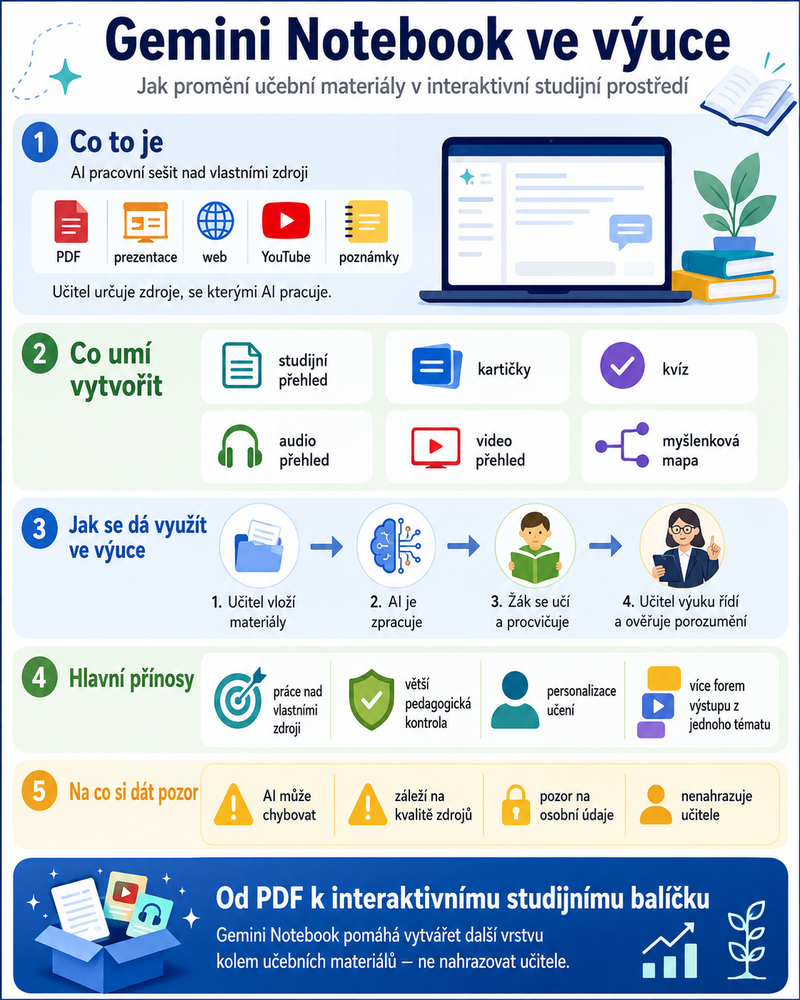

Umělá inteligence ve škole nemusí znamenat jen otevřít chatbot a napsat mu otázku. Mnohem zajímavější využití vzniká ve chvíli, kdy AI dostane konkrétní učební materiály, které vybral učitel, a pracuje především s nimi.
Právě na tomto principu funguje Gemini Notebook, služba, kterou Google do července 2026 označoval jako NotebookLM. Google ji postupně propojuje s dalšími částmi svého AI ekosystému.
Pro učitele je důležité hlavně jedno: Gemini Notebook dokáže z obyčejných PDF, prezentací, webových stránek, videí nebo vlastních textů vytvořit interaktivní studijní prostředí pro konkrétní téma.
A právě tím se výrazně liší od běžného AI chatu.

Co je Gemini Notebook
Gemini Notebook můžeme zjednodušeně popsat jako AI pracovní sešit postavený nad vlastními zdroji.
Učitel do něj vloží například:
- učební text,
- PDF dokument,
- prezentaci,
- pracovní list,
- Google Dokument nebo Prezentaci,
- webovou stránku,
- video z YouTube,
- zvukový soubor,
- vlastní poznámky,
- několik různých zdrojů k jednomu tématu.
Gemini Notebook potom s těmito materiály pracuje jako s vlastní znalostní základnou.
Můžete se například zeptat:
Jaké jsou tři nejdůležitější pojmy, které musí žák z těchto materiálů pochopit?
Nebo:
Vysvětli tuto látku jednoduše žákovi prvního ročníku a používej pouze informace z vložených zdrojů.
Notebook dokáže své odpovědi vztahovat ke konkrétním zdrojům a zobrazovat odkazy na místa, ze kterých informace čerpá.
To je pro školu podstatná změna.
Učitel totiž neurčuje pouze otázku, ale především informační prostor, ve kterém se má AI pohybovat.
Proč je Gemini Notebook pro výuku zajímavější než obyčejný chatbot
Když žák položí běžnému chatbotu otázku, AI může čerpat z obrovského množství informací. Výsledek může být výborný, ale také příliš složitý, mimo probírané učivo nebo jednoduše jiný, než učitel potřebuje.
U Gemini Notebooku může učitel říct:
„Toto jsou materiály, ze kterých budeme pracovat.“
A tím získává nad AI mnohem větší pedagogickou kontrolu.
Nejde tedy jen o:
ale spíše o:
To už je podstatně zajímavější model.
Co dokáže Gemini Notebook z učebních materiálů vytvořit
Gemini Notebook není jen nástroj na shrnutí dokumentu. Ze zdrojů dokáže vytvořit několik různých typů studijních materiálů.
1. Studijní průvodce
Z rozsáhlejšího textu lze vytvořit přehled toho nejdůležitějšího.
Žák tak místo třicetistránkového dokumentu může nejprve dostat strukturovaný přehled:
- hlavních pojmů,
- důležitých vztahů,
- klíčových faktů,
- otázek k zamyšlení.
Takový materiál může sloužit jako příprava před hodinou nebo jako opakování před testem.
2. Výukové kartičky
Gemini Notebook umí ze zdrojů automaticky vytvářet flashcards – výukové kartičky.
Například:
Odpověď: Růst celkové cenové hladiny, který vede ke snižování kupní síly peněz.
Student může kartičky postupně procházet a ověřovat si znalosti.
3. Interaktivní kvízy
Ze stejných materiálů lze vytvořit také procvičovací kvízy.
Učitel může upravit jejich:
- obtížnost,
- zaměření,
- obsah,
- cílovou skupinu.
Jedna sada materiálů tak může posloužit jak slabším studentům, tak těm, kteří potřebují větší výzvu.
4. Audio přehledy
Jednou z nejzajímavějších funkcí Gemini Notebooku jsou Audio Overviews.
AI vezme vložené materiály a vytvoří z nich mluvený výklad nebo diskusi připomínající podcast.
To otevírá úplně jiný způsob práce s učivem.
Student nemusí látku pouze číst. Může si ji:
- poslechnout cestou do školy,
- pustit při opakování,
- použít jako doplněk k textu,
- vyslechnout před následnou diskusí ve třídě.
Pro žáky, kterým více vyhovuje poslech než dlouhý text, může být tento formát velmi užitečný.
5. Video přehledy
Gemini Notebook dokáže vytvářet také video přehledy.
AI kombinuje výklad s vizuálními prvky tak, aby pomohla vysvětlit hlavní myšlenky ze zdrojů.
Některé pokročilé video formáty ale mohou mít jazyková nebo věková omezení a stejně jako u jiných generativních nástrojů platí, že vytvořený obsah může obsahovat nepřesnosti.
Proto by video vytvořené AI nemělo automaticky nahrazovat učitelský výklad.
Je lepší jej chápat jako další způsob reprezentace stejného učiva.
6. Myšlenkové mapy a vizuální přehledy
Ze zdrojů lze vytvářet také různé vizuální struktury.
Například z tématu:
Evropská unie
může vzniknout mapa propojující:
Pro některé studenty může být takové zobrazení mnohem přehlednější než několik stran souvislého textu.
7. Prezentace a další studijní materiály
Gemini Notebook postupně rozšiřuje také další výstupy, například studijní materiály, vizualizace nebo prezentace.
Jeden soubor zdrojů tak může vytvořit základ pro několik různých forem výuky.
Jeden notebook může představovat celé výukové téma
Tady začíná být použití Gemini Notebooku opravdu zajímavé.
Učitel nemusí vytvářet jeden obrovský notebook na celý předmět.
Praktičtější může být vytvářet jeden notebook pro jedno větší téma nebo tematický celek.
Například:
Notebook: Pracovní právo
Do zdrojů vložíme:
- učební text,
- prezentaci,
- vybrané části zákoníku práce,
- pracovní list,
- odkazy na ověřené stránky.
Notebook následně může obsahovat:
- studijní přehled,
- slovníček pojmů,
- audio výklad,
- kartičky,
- procvičovací kvíz,
- myšlenkovou mapu.
Student se přitom může na materiály dále ptát.
Vzniká tedy něco mezi:
učebnicí + pracovním sešitem + chatbotem + studijním asistentem.
Jak může vypadat práce žáka
Představme si, že žák dostane notebook k novému tématu.
Nemusí začínat otázkou:
„AI, vysvětli mi téma.“
Může postupovat například takto:
- Nejprve si projde studijní přehled.
- Poslechne si Audio Overview.
- Zeptá se na část, které nerozumí.
- Projde si výukové kartičky.
- Vyplní krátký kvíz.
- Vrátí se k otázkám, které nezvládl.
AI se tím přesouvá od jednoduchého „generátoru odpovědí“ k roli studijního průvodce nad učitelem vybranými materiály.
Gemini Notebook může pomoci i učiteli
Notebook nemusí používat pouze studenti.
Velmi dobře může sloužit také při přípravě výuky.
Učitel může vložit několik zdrojů a požádat například:
Najdi pojmy, které by mohly být pro žáky obtížné.
Nebo:
Navrhni pět otázek, pomocí kterých zjistím, zda žáci látce skutečně rozumějí.
Další možnost:
Porovnej všechny vložené zdroje a upozorni mě, pokud se v některém tvrzení rozcházejí.
Nebo:
Navrhni jednoduchý příklad z běžného života, kterým mohu tento princip vysvětlit.
Takové využití může výrazně urychlit přípravu hodiny.
Praktický model: jedna vyučovací hodina s Gemini Notebookem
Gemini Notebook nemusí znamenat, že studenti stráví celou hodinu před obrazovkou.
Může fungovat například takto:
1. Úvod učitele – 5 minut
Učitel vysvětlí problém a stanoví otázku, kterou budou studenti během hodiny řešit.
2. Práce se zdroji – 10 minut
Studenti pracují s materiály v Gemini Notebooku.
3. Dotazování AI – 10 minut
Studenti hledají vysvětlení jednotlivých pojmů a porovnávají informace ze zdrojů.
4. Aktivní procvičování – 10 minut
Použijí kartičky nebo kvíz.
5. Společná diskuse – 10 minut
Notebook se zavře.
Následuje nejdůležitější část: studenti musí vlastními slovy vysvětlit, co zjistili a čemu rozumějí.
AI tedy není cílem hodiny.
Je prostředkem.
Velký potenciál má personalizace
Každý student nemusí potřebovat stejné vysvětlení.
Jeden může požádat:
Vysvětli mi tento pojem jednodušeji.
Jiný:
Ukaž mi praktický příklad.
Další:
Otestuj mě z tohoto tématu.
A pokročilejší žák:
Polož mi pět obtížných otázek, u kterých nestačí pouze zapamatovat definici.
V klasické třídě s dvaceti nebo třiceti studenty je podobná individualizace pro učitele velmi obtížná.
Právě tady může AI dávat pedagogicky smysl.
Gemini Notebook se postupně propojuje s Google Classroom
Google v poslední době výrazně rozšiřuje využití AI přímo ve vzdělávání.
Cílem je, aby učitelé mohli studentům zadávat AI aktivity postavené na konkrétních studijních materiálech a měli větší kontrolu nad použitými zdroji.
Postupně tak vzniká model:
Pozor: Gemini Notebook není totéž co Study Notebooks v Gemini
Google používá několik velmi podobných názvů, takže zmatek je skoro povinnou součástí výbavy. 🙂
Gemini Notebook je nový název původního NotebookLM. Je zaměřen hlavně na práci se zdroji, výzkum, analýzu a vytváření dalších materiálů.
Vedle toho Google v samotné aplikaci Gemini zavádí také Study Notebooks – studijní notebooky.
Ty fungují trochu jinak.
Student stanoví svůj studijní cíl, nahraje materiály a Gemini může pomocí diagnostického kvízu zjistit jeho silné a slabé stránky. Následně vytváří krátké lekce a další procvičování, které se podle výsledků studenta mění.
Zjednodušeně:
Study Notebook = AI mě podle těchto materiálů postupně učí.
Tahle dvojice může být pro vzdělávání velmi zajímavá.
Na co by si měl učitel dát pozor
Ani Gemini Notebook není bezchybný.
AI může udělat chybu
Přestože pracuje s poskytnutými zdroji, stále jde o generativní AI.
Výstupy je potřeba kontrolovat.
Zvlášť pokud z nich vzniká:
- test,
- hodnocení,
- odborný výklad,
- právní informace,
- citlivé nebo důležité studijní materiály.
Kvalita notebooku závisí na kvalitě zdrojů
Platí jednoduché pravidlo:
AI z nekvalitního nebo zastaralého materiálu kvalitní učebnici zázrakem nevykouzlí.
Výběr zdrojů proto zůstává úkolem učitele.
A je to tak správně.
Pozor na osobní údaje
Do AI nástrojů není vhodné bez rozmyslu vkládat dokumenty obsahující:
- jména studentů,
- známky,
- zdravotní informace,
- doporučení poradenských zařízení,
- kázeňské informace,
- jiné citlivé osobní údaje.
Školy by měly používání AI řešit v souladu se svou interní směrnicí, GDPR a pravidly správce školního účtu.
Ani prostředí s vyšší úrovní ochrany dat neznamená, že můžeme přestat přemýšlet nad tím, co do AI vůbec patří.
Nejde o náhradu učitele
Gemini Notebook je nejsilnější právě tehdy, když se nesnaží učitele nahradit.
Učitel stále rozhoduje:
- co se bude učit,
- které zdroje jsou správné,
- co musí student pochopit,
- které otázky jsou důležité,
- jak bude probíhat výuka,
- jak ověřit skutečné porozumění.
AI pouze umožňuje nad stejnými materiály vytvořit více cest k učení.
Jeden student čte.
Druhý poslouchá.
Třetí potřebuje vizualizaci.
Čtvrtý chce procvičovat pomocí otázek.
A všichni mohou stále pracovat se stejným učivem připraveným učitelem.
Od PDF k interaktivnímu studijnímu balíčku
Právě tady je největší potenciál Gemini Notebooku pro školu.
Učitel už nemusí přemýšlet pouze:
„Jaký pracovní list vytvořím?“
Může přemýšlet:
„Jaké studijní prostředí kolem tohoto tématu vytvořím?“
Z jednoho kvalitně připraveného souboru zdrojů totiž může vzniknout:
A student si může mezi těmito způsoby práce přecházet podle toho, co právě potřebuje.
To je podstatně zajímavější využití umělé inteligence ve vzdělávání než prosté generování domácích úkolů nebo odpovědí.
Gemini Notebook ukazuje model, ve kterém AI nenahrazuje učební materiály ani učitele, ale vytváří kolem nich další interaktivní vrstvu.
A právě takové využití AI může mít ve škole skutečný smysl.